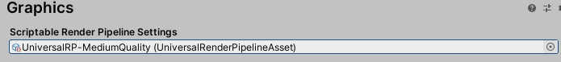
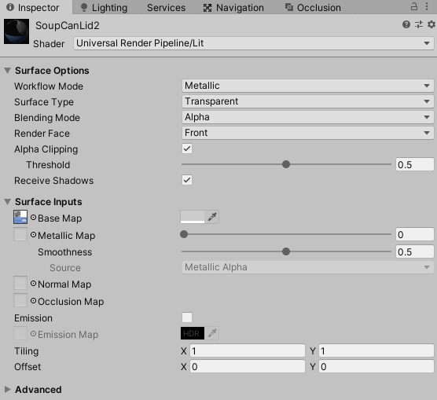
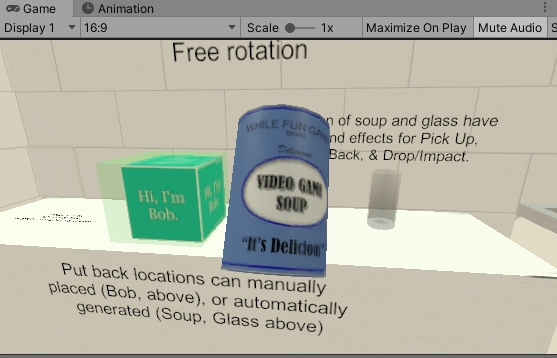

First Person Exploration Kit: Working with Universal Render Pipeline
Table of Contents
Importing Project Files
Start a new Project, Select URP as Template
Once done, import First Person Exploration Kit from the Asset Store.
When prompted with warning dialog, choose Import.
Ensure all files are selected, and choose Import.
Setting URP Details
You will notice that default URP "Construction Site" scene may have turned pink. To fix, set URP:
- Go to Project Settings, Graphics
- Set Scriptable Render Pipeline Settings to choose "UniversalRP-MediumQuality (UniversalRenderPipelineAsset)" (or desired equivalent setting)

- This fixes the "Construction Site" scene so its no longer pink.
- Open demoScene_1 that comes with FPE Kit. You will notice most or all the materials are pink. To fix this you must update the materials.
Updating Materials
Next, you need to upgrade project materials.
- Select Edit > Render Pipeline > Universal Render Pipeline > Upgrade Project Materials to UniversalRP Materials
- Choose Proceed when prompted.
- A handful of custom shader materials (from ProBuilder, TriPlanar, and some legacy Alpha Cutouts) require custom conversion.
- For example DemoInternalGeometry material. To fix these, simply note the Albedo (e.g. Floor.png), and change the material shader from WhileFunGames/DemoTriPlanar to Universal Render Pipeline/Lit and set the Base Map value to the old Albedo value.
- For alpha cutout textures (such as SoupCanLid, FanMachineCutout, etc.), do the same, but ensure Surface Type is set to Transparent, and that Alpha Clipping is enabled.

- There are also 3 surfaces that used the old Default-Material. They are the beams on the demo room ceiling, a table surface for the Demo Artifact, and a sign in the DemoComplexDesk. To fix all of these, simply create a new material of type Universal Render Pipeline/Lit, and leave texture blank. Drag and Drop this material onto those surfaces if you wish, and you're done.
- Now look at the Game View window and you'll notice the scene is no longer pink.
- Run demoScene_1.
Using New Stacked Cameras Method
You'll notice the screen is solid blue. We must update the Player prefab to used the new Stacked Cameras method. To do this:

- Open the FPEPlayerController prefab
- Select the child of MainCamera called ExaminationCamera, and set its RenderType to Overlay
- Now go to MainCamera, ensure its RenderType is set to Base (should be by default), and assign ExaminationCamera in the Stack area of the Inspector fields.
- Run the scene again. Everything is rendering correctly.

- You're all done!